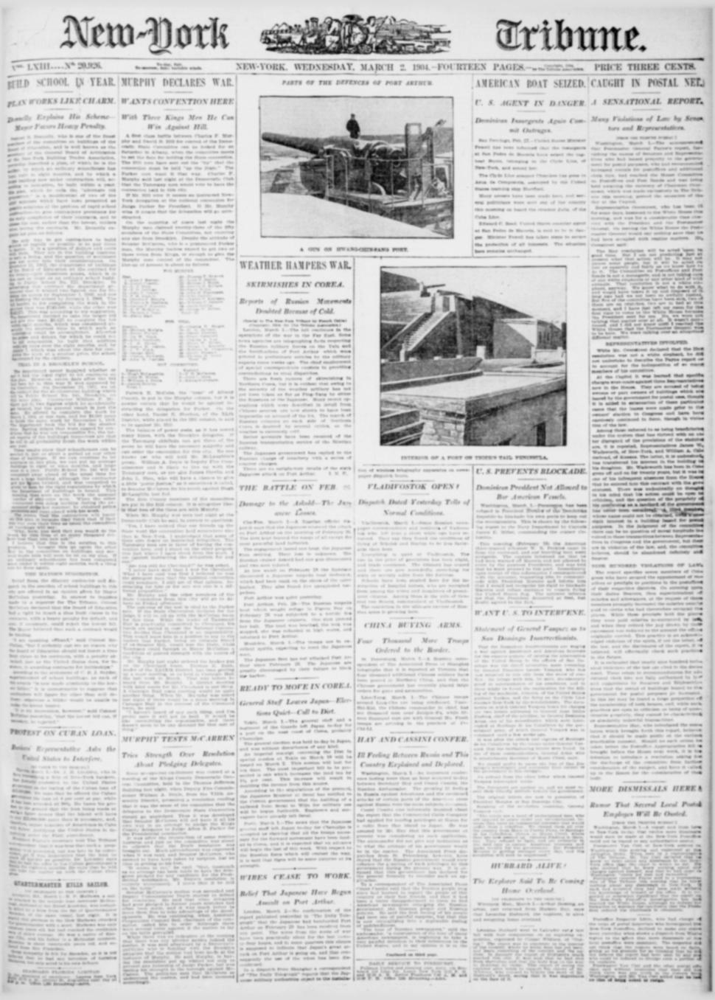

Collapse and the Customs QuestionColapso y la cuestión de las aduanas
The eraLa era
Heureaux was assassinated in July 1899, and American newspapers settled into a narrative of collapse. The assassination coverage itself carried the obituary of his rule: the Liberals' verdict, printed at length, was of power kept by secret assassination, indiscriminate executions and men sent on journeys of state who never reached their destinations — and of a president 'piling up the national debt of the country.' What followed filled the dispatches for six years: governments rising and falling within months — the capital surrendered to Vásquez in May 1902 after two days of fighting, the president taking refuge in the French consulate — an empty treasury, and European creditors threatening to collect by gunboat.
Heureaux fue asesinado en julio de 1899, y los periódicos estadounidenses se instalaron en una narrativa de colapso. La propia cobertura del asesinato traía el obituario de su régimen: el veredicto de los liberales, impreso extensamente, era el de un poder mantenido con asesinatos secretos, ejecuciones casi indiscriminadas y hombres enviados en viajes de Estado que nunca llegaban a su destino, y el de un presidente que «acumulaba la deuda nacional del país». Lo que siguió llenó los despachos durante seis años: gobiernos que subían y caían en meses — la capital se rindió a Vásquez en mayo de 1902 tras dos días de combates, con el presidente refugiado en el consulado francés —, un tesoro vacío y acreedores europeos que amenazaban con cobrar a cañonazos.
The San Domingo Improvement Company of New York, which held the republic's debt, turned its claims into a Washington file. By 1901 nationalist pressure had compelled President Jimenes to confront the company and threaten its agent with expulsion, while Belgium's foreign minister instructed his consul to keep bondholder funds in the treasury safe strictly protected for European creditors. In 1904 the Roosevelt Corollary announced that the United States would exercise an international police power where Caribbean governments defaulted, and an editorial on the coming fiscal control noted the price plainly: acting as Dominican receiver, the United States might acquire the use of a coaling station on Samaná Bay.
La San Domingo Improvement Company de Nueva York, dueña de la deuda de la república, convirtió sus reclamaciones en un expediente de Washington. Para 1901 la presión nacionalista había obligado al presidente Jimenes a confrontar a la compañía y amenazar a su agente con la expulsión, mientras el ministro de Relaciones Exteriores de Bélgica instruía a su cónsul a mantener estrictamente protegidos, para los acreedores europeos, los fondos de los bonistas en la caja del tesoro. En 1904 el Corolario Roosevelt anunció que Estados Unidos ejercería un poder de policía internacional donde los gobiernos caribeños incumplieran, y un editorial sobre el control fiscal venidero señaló el precio con claridad: actuando como receptor dominicano, Estados Unidos podría adquirir el uso de una estación carbonera en la bahía de Samaná.
Dominicans experienced those years as the harvest of the debt the dictatorship had piled up — and as a corridor narrowing around their sovereignty. Each default moved decisions from Santo Domingo to foreign capitals. The 1905 arrangement that put Dominican customs under American administration was reported in the United States as a tidy fix; at home it placed the republic's main revenue in foreign hands.
Los dominicanos vivieron esos años como la cosecha de la deuda que la dictadura había acumulado — y como un corredor que se estrechaba alrededor de su soberanía. Cada incumplimiento mudaba las decisiones de Santo Domingo a capitales extranjeras. El arreglo de 1905 que puso las aduanas dominicanas bajo administración estadounidense se contó en Estados Unidos como una solución ordenada; en casa, puso el principal ingreso de la república en manos extranjeras.
PlatesLáminas
They are rather careless about the quality of the means to be taken to obtain that result

Cate with President Morales and inform him that I would not
Key articlesArtículos clave
The Journal's sketch of Heureaux, continuing, gives the Liberals' verdictEl esbozo del Journal sobre Heureaux, continuando, ofrece el veredicto de los Liberales
Secret assassination was another of his favorite methods of heading off plots, and insurrections were nipped in the bud by almost indiscriminate executions; men were sent on journeys of state and never reached their destinations, and others were arrested and nothing more heard of their fate. Three years ago General Castillo, Minister of War, thought the opportunity favorable for starting a revolution for his own benefit: there was some trouble in the province, and Castillo got 1,000 rifles from the President on the plea of sending them to the province to put down the rebellion — of course, Castillo saw that they fell into the hands of his friends. Heureaux was for a time fooled, but discovered what was going on; he ordered General Estay, governor of the province, to execute Castillo, but the order was not carried out; by a neat stratagem the President enticed Castillo to the capital and arrested him, and the Minister was put aboard a war ship and taken to the province, where he was shot, and General Estay, surprised and protesting, was executed also because he had not obeyed orders. During the past two years Heureaux had lively times with the Jimenes insurrection that would not completely down, although he succeeded in driving Jimenes and General Morales out of the country; despotism was wearing on the people, and Heureaux was waning a bit in popular favor, and besides, Heureaux was piling up the national debt of the country.
El asesinato secreto era otro de sus métodos favoritos de cortar las conspiraciones, y las insurrecciones eran cortadas de raíz por ejecuciones casi indiscriminadas; los hombres eran enviados a viajes de estado y nunca llegaban a sus destinos, y otros eran arrestados y nada más se supo de su suerte. Hace tres años el general Castillo, ministro de Guerra, creyó favorable la oportunidad para comenzar una revolución para su propio beneficio: había algún disturbio en la provincia, y Castillo consiguió 1,000 rifles del Presidente con el pretexto de enviarlos a la provincia para sofocar la rebelión — por supuesto, Castillo se aseguró de que cayeran en manos de sus amigos. Heureaux estuvo por un tiempo engañado, pero descubrió lo que estaba pasando; ordenó al general Estay, gobernador de la provincia, ejecutar a Castillo, pero la orden no se llevó a cabo; por una estratagema ingeniosa el Presidente atrajo a Castillo a la capital y lo arrestó, y el Ministro fue puesto a bordo de un buque de guerra y llevado a la provincia, donde fue fusilado, y el general Estay, sorprendido y protestando, fue ejecutado también porque no había obedecido las órdenes. Durante los últimos dos años Heureaux tuvo tiempos animados con la insurrección de Jimenes que no se dejaba sofocar por completo, aunque logró expulsar a Jimenes y al general Morales del país; el despotismo estaba cansando al pueblo, y Heureaux estaba perdiendo un poco de favor popular, y además, Heureaux estaba acumulando la deuda nacional del país.
They are rather careless about the quality of the means to be taken to obtain that resultSon bastante descuidados en cuanto a la calidad de los medios para
The New-York Tribune reported that nationalist pressure compelled President Jimenes to confront the San Domingo Improvement Company and threaten its agent with expulsion after the company challenged Dominican customs authority. Meanwhile, Belgian Foreign Minister de Favereau instructed his consul in Santo Domingo to ensure that bondholder funds in the treasury safe remained strictly protected for European creditors. Additionally, the semi-official Dominican press responded defiantly to rumors that the American gunboat Scorpion was en route to coerce the government.
El New-York Tribune informó que presiones nacionalistas obligaron al presidente Jimenes a confrontar a la San Domingo Improvement Company y a amenazar a su agente con la expulsión después de que la empresa desafiara la autoridad aduanera dominicana. Mientras tanto, el ministro de Asuntos Exteriores belga, De Favereau, instruyó a su cónsul en Santo Domingo para que garantizara que los fondos de los tenedores de bonos en la caja fuerte de la tesorería permanecieran estrictamente resguardados para los acreedores europeos. Asimismo, la prensa semioficial dominicana respondió con desafío a los rumores de que el cañonero estadounidense Scorpion se dirigía a coaccionar al gobierno.
Cate with President Morales and inform him that I would notComunicarme con el presidente Morales e informarle que yo no lo
The New-York Tribune reported allegations by General Francisco Leonte Vásquez that Dominican insurgents deliberately targeted Americans to provoke armed United States intervention. Vásquez claimed government troops discovered incriminating letters at Santiago de los Caballeros written by revolutionary Governor Desiderio Arias to rebel leader Juan Isidro Jimenes. According to Vásquez, these documents explained the deadly attack on machinist Johnson of the USS Yankee and the gunfire directed against the American steamer New York.
El New-York Tribune informó sobre las denuncias formuladas por el general Francisco Leonte Vásquez en el sentido de que los insurgentes dominicanos atacaban deliberadamente a estadounidenses para provocar una intervención armada de los Estados Unidos. Vásquez afirmó que las tropas del gobierno hallaron cartas incriminatorias en Santiago de los Caballeros escritas por el gobernador revolucionario Desiderio Arias al líder rebelde Juan Isidro Jimenes. Según Vásquez, estos documentos explicaban el ataque mortal contra el maquinista Johnson del USS Yankee y los disparos dirigidos contra el vapor estadounidense New York.
ErasEras · The era's articlesLos artículos de la era · On the timelineEn la cronología